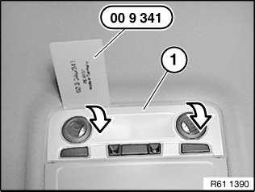
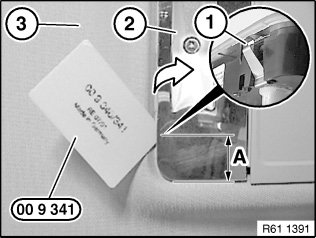
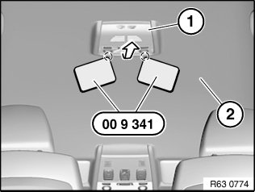
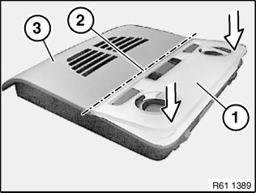

63 31 004 Removing and Installing or Replacing Complete Ceiling Light (Rear, With Module For Passenger Compartment Protection)
63 31 004 Removing And Installing Or Replacing Complete Ceiling Light (Rear, With Module For Passenger Compartment Protection)
Special tools required:

IMPORTANT: Follow instructions for handling light bulbs (interior lights).

IMPORTANT: Reflector on ceiling light must not damaged.
Carefully unclip trim of ceiling light (1) with special tool 00 9 341 in direction of arrow from ceiling light and remove.

Version with reading lights:
NOTE: Operation is shown by way of example on the roof switch centre.
IMPORTANT: Reflector (2) and roofliner (3) must not be damaged.
Retaining clips (1) are located on centreline of both reading lights.
Carefully unlock retaining clips (1) with special tool 00 9 341.

Version without reading lights:
IMPORTANT: Reflector (2) and roofliner (3) must not be damaged.
Retaining clips (1) are located at distance (A) from outer edges of ceiling light.
(A) = 35 mm
Carefully unlock retaining clips (1) with special tool 00 9 341.

Lever ceiling light (1) with special tool 00 9 341 in direction of arrow out of roofliner (2).
Disconnect plug connection underneath and remove ceiling light (1).

Installation:
Assemble ceiling light prior to installation:
- Feed in ceiling light trim (1) at line (2)
- Press ceiling light trim (1) in direction of arrow onto ceiling light (3)
Make sure ceiling light trim (1) is correctly engaged on ceiling light (3).

Replacement:
- Remove module for interior movement detector
- If necessary, remove bulbs.